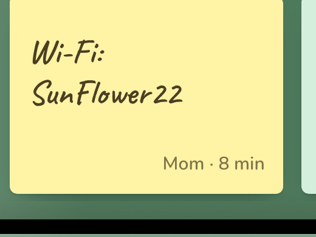
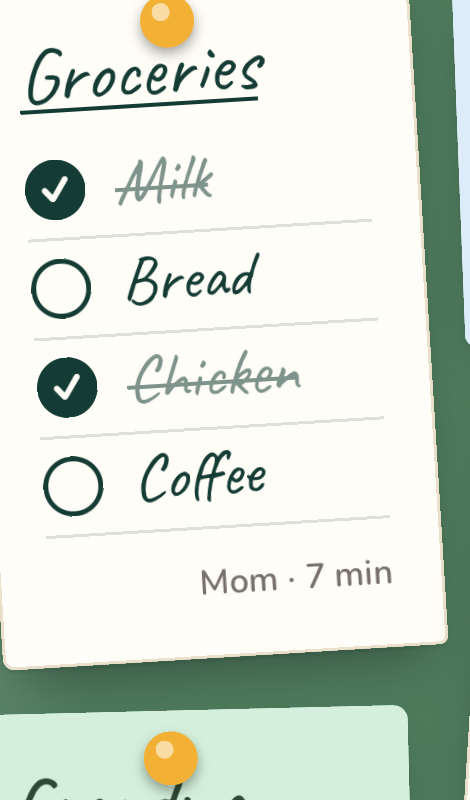
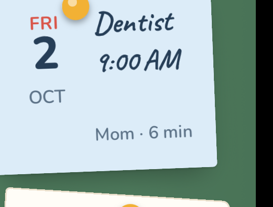
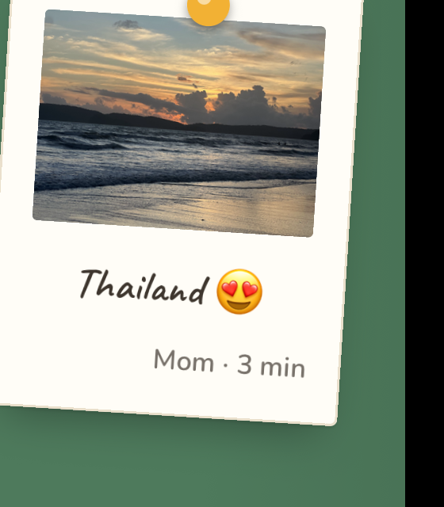
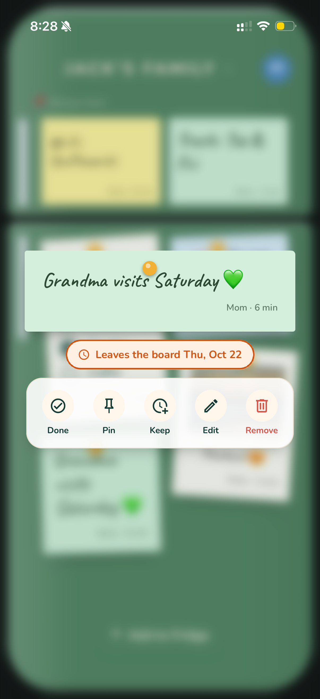

The family noticeboard, on every phone
Stop losing important stuff in the family group chat.
Fridge Board is one shared board for your home. The Wi-Fi password, the grocery list, Saturday's dentist time — pinned where everyone can see it. No replies, no pings, nothing scrolls away.
Try it as a guest. No sign-up. iPhone & Android.
Wi-Fi: HomeNet
sunflower22
Trash: Tue &
Fri
Groceries
Dentist
10:30 AM
Grandma visits Saturday ♥

Goa! ♥
Buried every day
Lost it in the chat again?
The things people actually needed — drowned under hundreds of messages, stickers and "seen by 12".
Wife · 214 messages ago
"Pick up milk, eggs and bread on your way home."
You came home with… nothing. 🙈
Roommate · 380 messages ago
"Rent's due on the 1st. Bins go out Tuesday."
Late fee, and the bins missed. 🗑️
Mom · 300 messages ago
"Dentist moved to Saturday 10:30."
You showed up Friday. 🦷
Stop scrolling up for the Wi-Fi password.
Today
Who took my charger
not me
😂😂😂
Dinner at 8
New wifi pw is sunflower22
[sticker]
Wi-Fi: HomeNet
sunflower22
What goes on the board
Notes, lists, dates and photos.
Everything people used to lose in the chat, in one place everyone can see.

Notes
Short and clear. The Wi-Fi password, the door code, "back late tonight".

Lists
Groceries, chores, packing. Everyone ticks things off and sees the same list.

Dates
Dentist, match day, rent due. Pinned where no one can miss it.

Photos
Grandma's visit, the new puppy. Share a moment without opening a feed.
Why it's not another chat
Replies Reactions Read receipts A buzz for every post Just Notes. No Noise.
No conversations
No replies, threads, reactions or "seen by". You post it and you're done, so nothing turns into a debate.
No pings for every post
The board doesn't buzz each time someone adds a note. Look at it when you need it, like the fridge.
Nothing gets buried
Posts stay where they were put instead of scrolling away. Important things can be pinned to the top for good.
The board tidies itself
Nothing hangs around forever.
Real fridge doors fill up with notes nobody reads. Here, things leave on their own once they've done their job.
-
Dates
leave the day after the event
-
Lists
leave two days after everything's ticked
-
Notes
leave after a week
-
Photos
leave after two weeks
-
Pinned
stay until you unpin them, like the Wi-Fi password
Removed something by mistake? You can bring it back for 30 days.

it tells you when it goes ↑
How it works
Up and running before the kettle boils.
Make a board
Give it a name and a door colour. Start as a guest, or with Apple, Google or your email.
Send the link
Share one invite link in your family chat. Tapping it opens the board. There's no code to type.
Everyone pins
Notes, lists, dates and photos show up for everyone right away, on every phone.
Made for
Anyone who shares a fridge. Or doesn't.
Keep one board per group, like "Home", "Flat 4B" and "Badminton Sundays", and switch between them from the board name.
Private by default
Your fridge door, not a social network.
Invite only
Only people with your board's link can join, and the owner can remove anyone.
No ads
No feeds, no followers and nothing to scroll. Just the board.
Minimal data
A display name, what you post, and an email only if you choose to save your account.
Delete any time
Delete your account from the app. Your posts stay on the board as "Former member".
Questions
Good questions.
How is this different from WhatsApp, Google Keep or a family calendar?
Group chats are built for conversation, so the useful bit — the password, the time, the list — scrolls away under "lol" and stickers. Fridge Board has no conversation at all: just the notes, lists, dates and photos everyone needs, in one fixed place. Unlike a shared notes app, the board is built around voices and photos that expire on their own, and it notifies no one. Unlike a calendar, it's not only for events: it's the whole fridge door.
Do I need an account?
No. Tap "Use as guest" and you're on a board in seconds. You can save your account later with Apple, Google or email, and every board comes with you.
What happens if I delete the app as a guest?
Your guest account lives on that phone, so deleting the app can lose it. Save it with Apple, Google or email first and your boards follow you to any phone.
Can people reply to a post?
No — there are no replies, threads or reactions. You post it and you're done, so nothing turns into a debate.
Will it keep sending me notifications?
No. The board never buzzes when someone posts. Open it when you need it, like walking up to the fridge.
Who can see my board?
Only people you invite. Boards are invite-only, and the owner can remove anyone at any time.
Can I get something back after removing it?
Yes. Removed notes stay restorable for 30 days before they're gone for good.
Does everyone need the same kind of phone?
No. Fridge Board works on iPhone and Android, and everyone sees the same board right away.
Put something on the board.
Start a board for your home in under a minute.